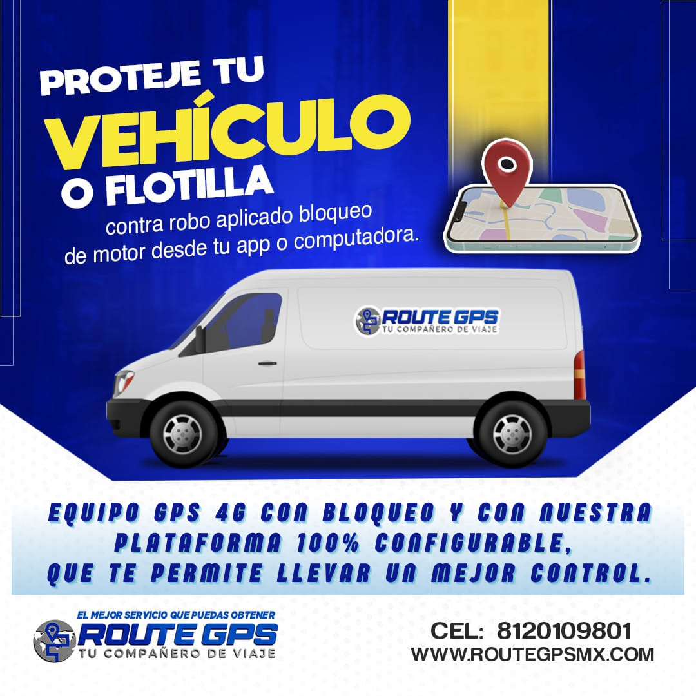
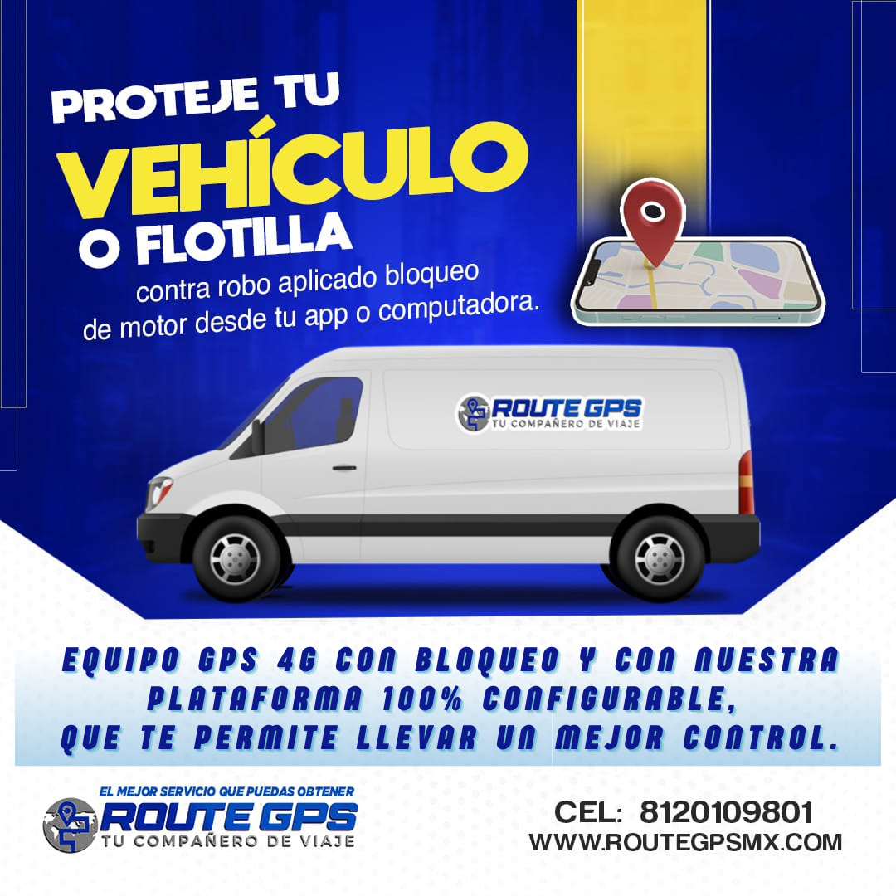

Soluciones Digitales, Resultados Tangibles: Donde la Estrategia y la Tecnología Convergen.
Gladys Arlet Martínez Caballero.
Licenciada en Administración de Ventas, actualmente cursando la Maestría en Innovación Empresarial, con base técnica en programación.
Creo firmemente en el aprendizaje constante, en el trabajo colaborativo y en la capacidad de transformar los retos en oportunidades.
Ver Habilidades DigitalesMi Trayectoria de Valor
Portafolio de Proyectos y Skills
Cada proyecto es la prueba de mi capacidad para fusionar la estrategia de ventas, con mi creatividad para ejecutar soluciones digitales efectivas y el impulso de equipos hacía resultados excepcionales.
Construyendo Experiencias Digitales: Sitios Web Personalizados con Canva.
Planificación y desarrollo de sitios web interactivos, fusionando estética y estrategia para mejorar la experiencia del usuario y alcanzar objetivos de comunicación y marketing.
Diseño de Flyers y Material Publicitario
Creación de flyers y contenido digital, combinando creatividad y técnicas de marketing para maximizar el impacto visual y enganchar a la audiencia.

Gestión y Venta de Proyectos Web
Análisis de oportunidades y venta directa de proyectos de sitios web, aplicando estrategias de innovación empresarial, técnicas de ventas e investigación de mercado, para ofrecer soluciones digitales efectivas a los clientes.
Proyecto de Contenido Multimedia: IA, Edición y Producción
Gestión completa de un proyecto multimedia: desde el contenido generado por IA, la edición de vídeo en Filmora y la optimización de audio en Adobe Audition, garantizando una experiencia cautivadora y envolvente.
Fluidez Digital e Innovación
Mi expertise reside en la capacidad de adaptarme rápidamente a las nuevas tecnologías, aprovechando la Inteligencia Artificial como herramienta clave para potenciar la eficiencia y creatividad en cada proyecto. Además, cuento con dominio en herramientas multimedia y de productividad para garantizar una ejecución precisa y de alta calidad en todos los aspectos.
Mi objetivo es fusionar innovación y practicidad para entregar soluciones digitales de alto impacto, superando expectativas y optimizando recursos

Gemini IA

Open AI
Excel

Word
PowerPoint
Gemini IA
Open AI
Excel
Word
PowerPoint
¡Es Momento de Innovar!
Si buscas una profesional que combine estrategias de marketing e innovación tecnológica , estoy lista para llevar tu proyecto al siguiente nivel.
Contáctame 
